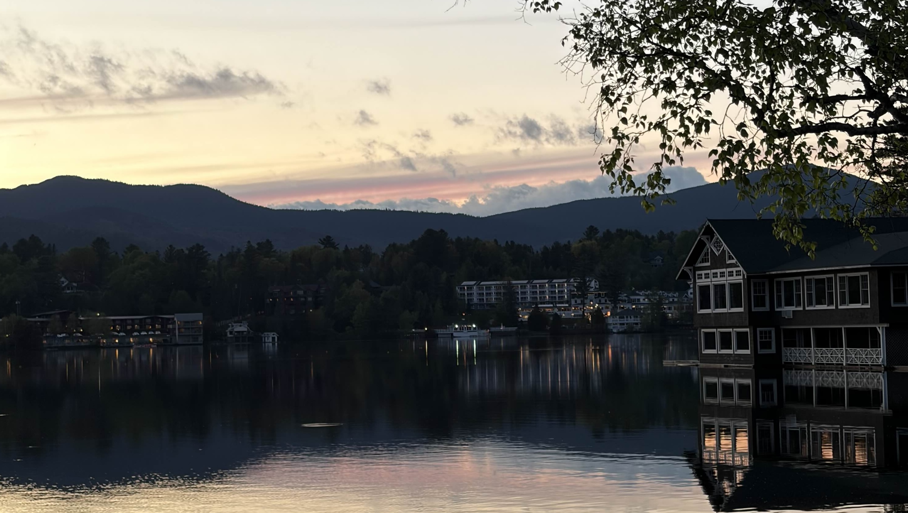
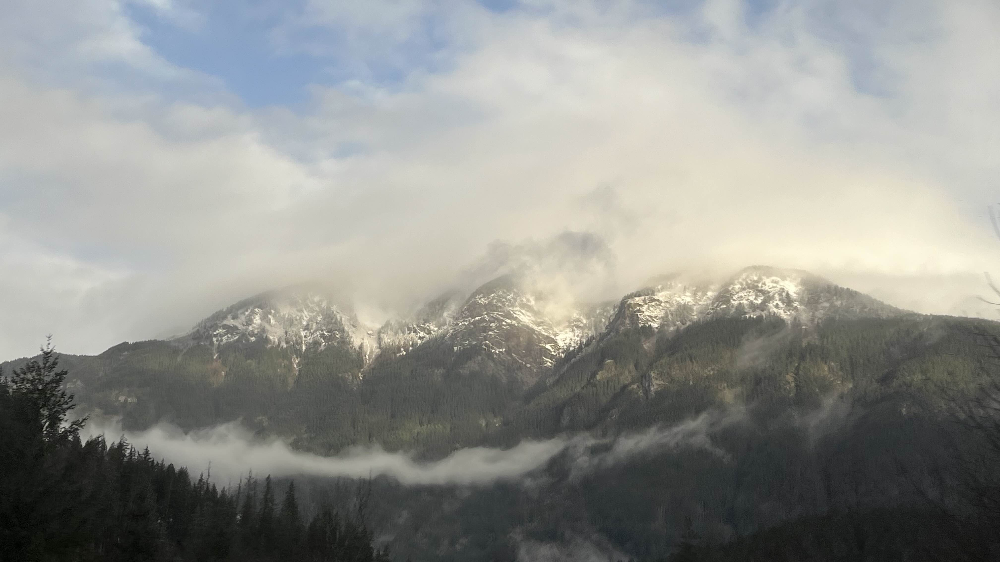
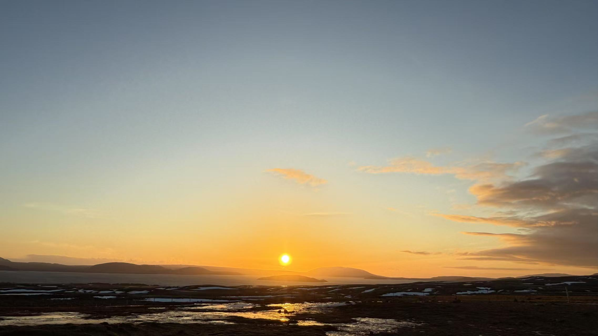

I'm an active volunpeer for the Smithsonian Transcription Center. I've transcribed over 300 pages of handwritten astronomy observation
journals by women astronomical computers at Harvard Observatory, helping to preserve primary source scientific and historical materials. Tangentially, I've made over 2000 classifications
in various Citizen Science projects, most notably Supernova Host Herders and Galaxy Zoo.
In high school, I competed in Science Olympiad. My year was the first time the school made it to nationals--my partner and I ended up receiving third place
in Chemistry Lab!
I also dabble in amateur nature photography. Here are some of my photos!


